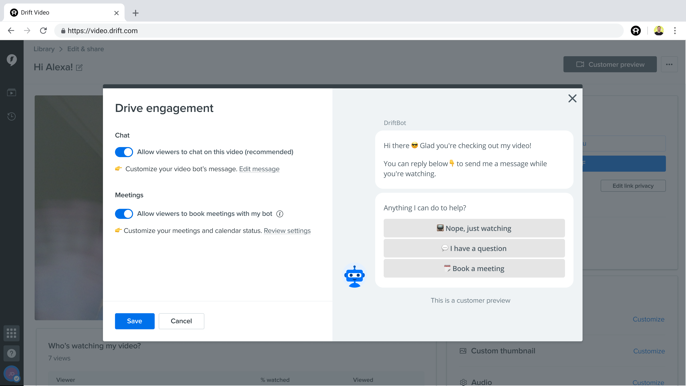

Project Context
Drift is a B2B SaaS tech startup that helps over 50,000 companies create pipeline and accelerate revenue through flagship products like AI Chatbots and Drift Video. They coined Conversational Marketing, transforming the way companies buy and sell products to other companies by reducing friction in prospecting for sales reps.
In early 2020, I transferred to the Drift Video team and became the sole product designer on the Drift Video flagship product for Q2! ⚡️

Our Main Customers and Their Customers
Drift’s main customers are Sales Reps and Marketing teams from companies like Cisco, Eventbrite, Pluralsight, and Peloton. We help them successfully connect with more potential customers, also known as prospects or leads.
Sales reps usually send cold emails to prospects, hopefully hear back from some interested potential customers, and send more back-and-forth emails to finally schedule a meeting to chat. But this B2B outreach method makes capturing leads a very manual process and contains tons of friction at every step — Drift Video addresses sales reps’ painpoints by delivering a modern solution for prospecting.
What is Drift Video and the Drift Video Bot?
Drift Video is an enterprise-ready video platform built to start conversations between sales reps and their prospects. Like similar products such as Loom, Drift Video lets people record themselves and their screen, and share the video with others. Sales reps use Drift Video to record a quick and highly engaging sales pitch, and share the link to potential business customers through LinkedIn or email. They’re then notified as soon as someone starts watching their video, so that they can hop in to chat in real-time with a potential customer.
What‚Äôs unique is that every video is equipped with a Video Bot ü§ñ, which encourages viewers (or potential customers) to ask questions asynchronously and captures their email for a follow-up chat. The viewer‚Äôs attention span is normally very limited, but the Video Bot captures this prime time and offers engagement options upfront, 24/7.
A Drift Video Bot accompanies every video on the right. It offers a quick way for people to ask questions.
Metrics and research show that using video as a means of B2B outreach gain significantly more responses with less effort, compared to a traditional cold email. Making the B2B buying experience easier and more successful for our users drives the success of Drift Video!
The Problem
Drift Video Bot was a huge hit when it rolled out to the public in March 2020, placing 1st in Product Hunt of the Week. I joined the team at such an exciting time; we just launched a new feature that significantly improves sales reps’ workflows, so what’s next? How can we further elevate the Video Bot experience for sales reps? We turn to our users for the next step.
Customer Painpoints and The Opportunity
1. A week after the Video Bot launch, we heard from sales reps that many viewers ask the bot one common question: “Can we book a meeting?”
Although the Video Bot solves the initial friction by capturing their emails upfront, prospects still need to wait for a back-and-forth email conversation to decide on an available time. And if the prospect indicates interest on a Friday evening (when the sales rep is offline), this leaves the prospect waiting until Monday — not an ideal experience.
How might sales reps take advantage of the 24/7 Video Bot to allow prospects book meetings with ease and on-demand?
2. Sales reps also want to customize the Video Bot’s initial static welcome message, which currently says “Thanks for watching!”
How might personalizing this impact the engagement rate? How can we design to fit this new customization flow into our existing product and workflow?
My Team
Alexa Nguyen - Product Manager
Celine Yan - Product Design Co-op
Tommy Hu - Tech Lead
Brian Schendt - Associate Software Engineer
Danielle Nguyen - Software Engineer
Alex Melagrano - Software Engineer
Design Process
In this case study, I’ll walk through my designs for the two major opportunities to elevate the Video Bot for sales reps:
1. Let Drift Video Bot Book Meetings with Prospects
2. Customizing the Video Bot’s welcome message for a stronger first impression
Note that although these are two distinct tasks, we’re designing for an entirely new workflow for sales reps to manage their Video Bot within our existing product. Thus, I considered the scalability of my solutions to accommodate future feature add-ons to the Video Bot.
Product Audit and Research
Before jumping into ideation, I familiarized myself with the existing product and the sales reps’ workflows. This is the customer journey:
1. Sales reps record their video with the Drift Video Chrome extension.
2. Once finished recording, they’re taken to the Edit & Share Page where they make any quick customizations (i.e. excluding audio, trimming video) before copying the share link.
3. They share the link to prospects during outreach either through LinkedIn or email.
4. Sales reps can check their Library for past recorded videos.
5. Sales reps can manage account settings in Settings.
Concept Sketches and Explorations
Sketching validated my understanding of the product. We’re starting an entirely new workflow, so I dabbled a bit in the visionary space and product thinking, testing the boundaries by reimagining the Drift Video’s admin interface if it revolved around Video Bot and delivered performance metrics on each video (i.e. how many meetings were booked or what % of people interacted with each bot).
I also presented realistic, optimized explorations that works with our existing pages and product, which I iterated upon feedback from my PM, engineers, and other Drift designers.

Imagining explorations for both features across different areas of the product
High Fidelity Designs
I’ll cover the design and development process separately for the two features Let Drift Video Bot Book Meetings For Sales Reps and Customizing the Video Bot’s Welcome Message. Feel free to skip to either section for a more in-depth look into the process.
Feature 1: Let Drift Video Bot Book Meetings with Prospects
The first feature our customers wanted was a way for viewers, or prospects, to very quickly book a meeting through the video bot. My designs encompass the end-to-end experience — the prospect’s experience to book a meeting as well as the sales rep’s experience to set up the feature.
(1/3) Adding a “Book a Meeting” Button Per Video
The Video Bot originally came with two buttons: “I have a question” and “Nope, just watching”. Prospects could quickly access either while watching the video. Based on research calls with sales reps, they wanted an equally simple solution to the high demand of booking meetings — thus, we added the third option “Book a Meeting” where prospects could choose an available time on the sales rep’s calendar.

Our simple solution was to add a 3rd CTA where prospects could book a meeting with the sales rep's availability.
It's a 3-step click to successfully book a meeting in under 10 seconds, eliminating hours of post wait-time and back-and-forth emails. For this to work however, we need a way for sales reps to first connect their calendar to their Drift Video account.
(2/3) Connecting the Sales Rep’s Calendar
This part of the workflow is more backend-intensive, as my engineers needed to connect the users’ Google or Outlook calendar and detect availability. But, we still needed a user interface for sales reps, so I designed a simple page in Settings for my frontend engineer. Despite its simplicity, the design follows the Drift design system and other Settings pages, providing a familiar experience for sales reps.
My design for sales reps to connect their calendar so that the the Video Bot can show available times.
(3/3) Choosing Which Video Bots Will Feature “Book a Meeting”
We also learned that not all sales reps want to offer “Book a Meeting” for every video, which means we needed a workflow where they can choose to enable or disable the feature.
When sales reps finish recording a video, they land on the Edit & Share page to make any customizations (including Audio, trimming video, etc.) before copying the share link. This is the main touchpoint for where sales reps decide to customize any video bot-related settings per video. But, the previous Edit & Share page exposed customizable settings like Include Audio and __ across the page, leaving little room for Video Bot-related settings.
The old Edit & Share page (before my new design)
However, the Video Bot is a priority in business needs, so I wanted to ensure it was effortless to access these novel settings. I called out that the overall UX had potential for a redesign, so that it could scale to accommodate future settings such as Video Bot, adding video captions, etc.
I first designed the MVP of Video Bot settings to fit with the current experience, so that our customers could use this feature as soon as possible.
üõ¥ MVP Design: üõ¥
The MVP design simply adds the Book meeting setting toggle under the "Allow viewers to chat on this video" toggle on the right. Still not ideal because video settings are scattered throughout the page.
I then designed and iterated over a new “Edit my video” card to organize settings all in one place for an improved UX, and scalability for future settings. All Video Bot-related settings are under “Drive Engagement,” and a modal pops up with a Video Bot preview. The Video Bot preview visually emphasizes the strongest feature of our overall product, and dynamically changes as sales reps enable settings.
✨ Final Design (Edit & Share Page): ✨
My final design for Edit & Share. I created the new card "Edit my video" for all customizable settings. I also pulled out the Analytics data (under the video) so that it's no longer a hidden feature.
✨ Final Design (Drive Engagement Modal): ✨
My final design for where sales reps can enable the Book a meeting feature, which lives in "Drive Engagement". This modal scales to host future Video Bot-related settings.
✨ Final Design Prototype: ✨

A recording of the experience to enable the Book a Meeting feature. Note how the preview dynamically changes based on the settings in the modal.
After the engineers finished building the designs, I ran through Design QA with the frontend engineer for a visual and interaction quality check. We shipped the MVP designs in 1 week, then shipped the new redesign 2 weeks after!
üöÄ Shipped and live in prod today: üöÄ

What the engineers built from my design. It's pretty on-point and identical to the Figma designs!
Feature 2: Editing the Video Bot’s Message
The second feature our customers wanted was the ability to customize the Video Bot’s greeting; a personalized greeting leads to more engagement from prospects, which means more revenue for sales reps. I designed how customers can customize the bot’s message in our product.
(1/2) Previewing the Message in Edit & Share Page
With the preview in the Drive Engagement modal on the Edit & Share page, we surface the bot’s most up-to-date message. However, editing the Video Bot’s message is a time-intensive task that doesn’t seem to fit on the Edit & Share page. A sales rep spends only a short amount of time on the Edit & Share page adjusting the video settings before sharing. In addition, although a sales rep can have many video bots (one per recorded video), there can only be one message per video bot (a constraint at the time), so surfacing the editing capability per video’s Edit & Share page would set the wrong expectations.
But since the Edit & Share page is the major touchpoint for all sales reps, I included the link where sales reps can edit the message in Settings.
In the same Drive Engagement modal from the Edit & Share page, I added a link where sales reps can go to Settings to edit their bot's message. The bot preview on the right dynamically shows the most up-to-date bot message, setting the right expectations with our users.
(2/2) Editing the Message in Settings Page
The technical constraint above heavily influenced my decision to bring the editing capability to Settings. After rounds of iterations and design crit, this is my final design.
✨ Final Design of Edit Message in Settings: ✨
Sales reps can edit their bot message in the Settings page. The preview on the right dynamically updates to reflect changes in the text editor on the left.
Like the Drive Engagement modal in the Edit & Share page, I surfaced a Video Bot preview to show sales reps what the message looks like to prospects, which helps with visual and creative placement of text. The preview also visually emphasizes the strongest feature, the Video Bot, of our overall product.
An edge case I considered in my designs was for really long messages. Working with engineers to understand front-end implementation constraints, I was able to show the preview in its entirety and offer the right expectation to sales reps, but the WYSIWYG/Editing field had to scroll.
❗ Edge Case Design: ❗️
Overly long messages was an edge case to consider—how would the page adapt to an expanding bot preview?
After the frontend engineer built my designs, I ran through Design QA with him for a visual and interaction quality check. Providing design feedback during QA helps us catch a bunch of overlooked errors, so that we ship high quality experiences to our users.
A sample of what my QA notes look like for my frontend engineer.
Side note on the positioning in the navigation menu: The same technical constraint mentioned above required the editing feature to be under Organization Settings > Conversations, but the future vision is to have a distinct section called “Video Bot” for advanced bot settings.
The Impact of my Designs and Customer Excitement!
Throughout the process, I sat in multiple weekly research calls to understand customer needs and briefly present my work for feedback.
When “Book a Meeting” finally launched, we saw a surge of over 1,350 conversations generated on videos weekly, and 8 meetings booked within the first 2 days of launch!
It was incredible to hear directly from customers how we removed hours of friction and increased their company revenue, and the overall excitement.
My Reflection and Learnings at Drift
Driving designs as the sole designer of a flagship product at Drift, a hypergrowth company, was the most impactful moments of growth and learning in the trajectory of my design career. As the sole co-op during this semester, I was privileged to have worked with a tightknit team of senior designers daily, participating in weekly crit and collaborating to contribute to our design system and Figma components. Here are my key takeaways during my invaluable 5 months at Drift:
1. Lead design decisions with customer centricity
2. Proactively seek feedback from other designers to grow and unblock yourself
3. Self awareness is key to growth as a designer